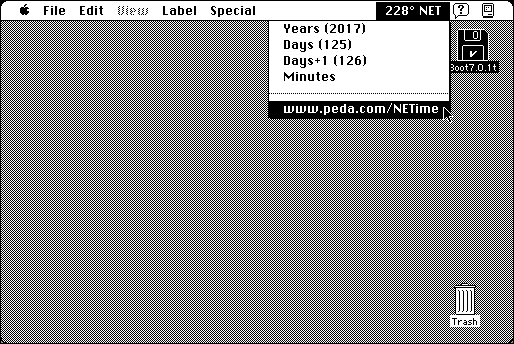

Download
NETime.zip (41K) NETime 1.00 repackaged into a zipped hfs disk image and checksum file. The disk image can be mounted with Mini vMac.
NETime.sit.hqx (53K) NETime 1.00 in the original format.
copyright: Pedagoguery
mod date: Mar 4, 2000
license: Freeware
official url :
Pedagoguery Software: NETime
A “system extension that places a New Earth Time clock in your menu bar”, where “each day is divided into 360 degrees rather than 24 hours.” For “System 7 to MacOS 9.2”.

If you find these downloads useful, please consider helping the Gryphel Project, which hosts them.
Here are the md5 checksums for the downloads, signed with Gryphel Key 5:
--------- GRY SIGNED TEXT --------- 42c5e9d813b7cdbeb00db21f4e8f51b4 NETime.zip 954b7b88366419651fae51bf7b5988b3 NETime.sit.hqx ------- BEGIN GRY SIGNATURE ------- Gry/4Xa8CFcUzxdN/O6ht5WQTsx7E5E50SdlZleu4I7OmHgCNa5GVrD2Peeu03l6 /utUgCVb0br1j5d2qCSThLaFZ0pC4lotTeiOZ5JiAPLn4+Ot7D6dEaEHFlZ0xYrX f8P44V8xCd0CE4MUpeQnwl25cD5JnngXSoaUrEVheuw7KVRFAoSyhutx3jQSKSsG -------- END GRY SIGNATURE --------